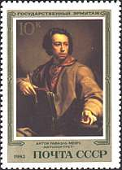
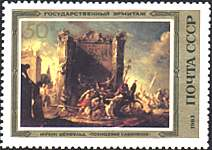
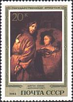
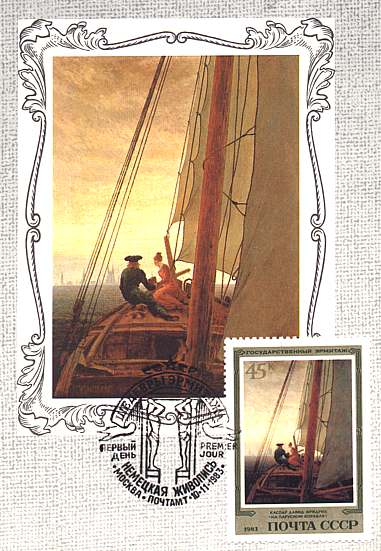
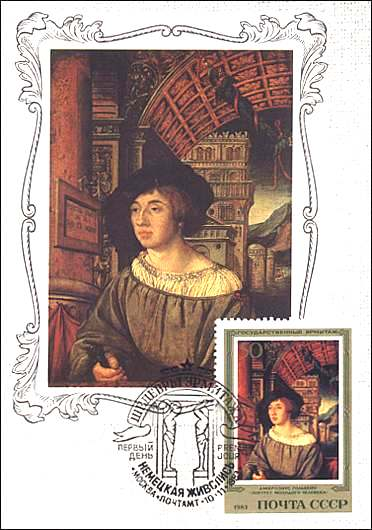
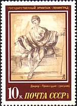
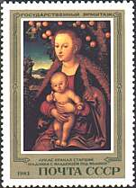
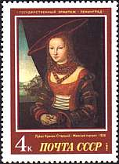
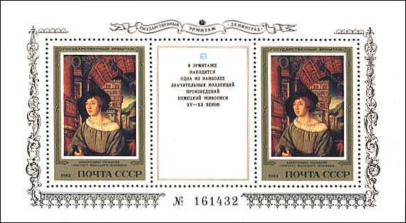

German Paintings from Hermitage, St. Petersburg
German Paintings Collection
The Hermitage German collection covers the development of German painting from the 15th to the 19th centuries. Cranach, Lucas the Elder(1472-1553) was a German Renaissance painter and graphic artist excelled in portraits and in female nudes. The Hermitage collection is proud of its five works, the exhibition including his masterpieces Venus and Cupid (1509) and The Virgin and Child under an Apple Tree (c.1525), as well as the charming Portrait of a Lady (1526).
|
 |
 |
 |
18th-century Germany adored Anton Raphael Mengs (1728-1779) was a master of Neoclassicism, whose work is epitomized by Perseus and Andromeda (1777-1783) and Self-portrait (1774-1783). Tip:Point on the stamps with the mouse index for more information about the works of art displayed.
|
 |
 |
Durer, Albrecht (1471-1528) is the most famous artist of Reformation Germany, widely known for his paintings, drawings, prints, and theoretical writings on art, all of which had a profound influence on 16th-century artists in his own country and in the Lowlands.
|
 |
 |
 |
The quality of Durer's work, his prodigious output, and his influence on his contemporaries were of enormous importance to the history of art. In a broader context, his interest in geometry and mathematical proportions, his keen sense of history, his observations of nature, and his awareness of his own potential demonstrate the intellectually inquiring spirit of the Renaissance.

Friedrich,
Caspar David (1774-1840)
was an outstanding 19th-century German Romantic painter, whose awesome
landscapes and seascapes are not only meticulous observations of nature but
also allegories. His early drawings—precisely outlined in pencil or
sepia—explored motifs recurrent throughout his work: rocky beaches, flat,
barren plains, infinite mountain ranges, and trees reaching towards the sky.
Later, his work began to reflect more of his emotional response to natural
scenery.
Portrait of a Young
Man by the renowned German portrait painter Ambrosius Holbein, the elder
brother of Hans Holbein, is a marvellous example of Northern Renaissance
portraiture. Works by Ambrosius are of great rarity, for he died young.
Link:
-
Hermitage Museum